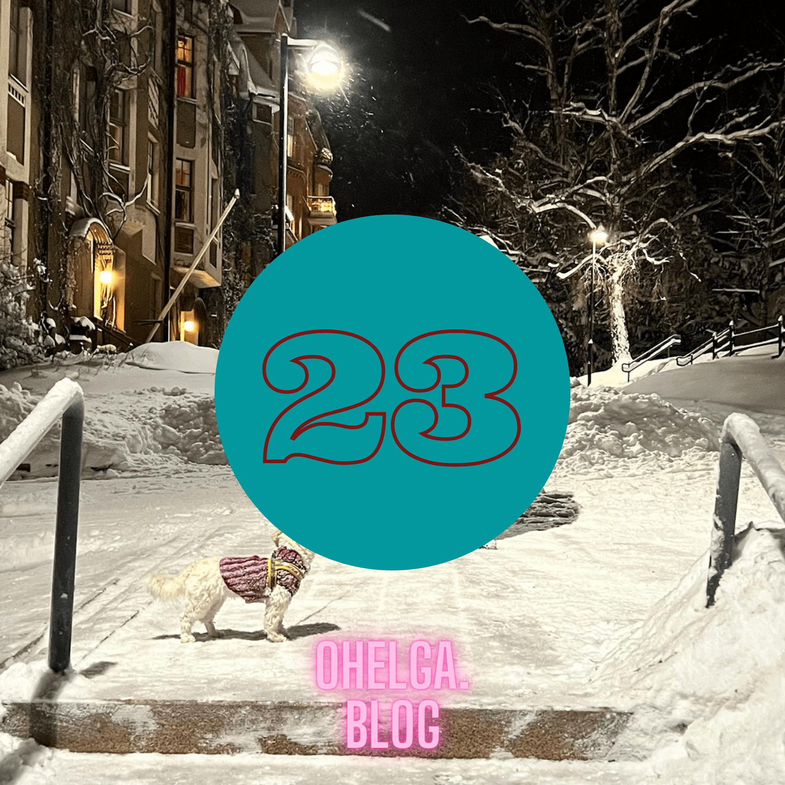

Versionen av juldrottningen med ett röstregister bredare än en trefilig motorväg. Kuuntelijoille tulee jatkotehtävä. Ja sähköurut ovat tulleet takaisin.
Apple Music:
Mariah Carey - O Holy Night (1996 Music Video version)
Spotify: Tämä versio ei löydy Spotifysta, tässä linkki musiikkivideoon:
Mariah Carey - O Holy Night (1996 Music Video version)

Kommentit / Kommentarer (2)
<p>Ja, Jo, hon är riktigt bra. Hon var i ropet då jag byggde båtar och hennes röst fyllde snickeriet flera gånger om dagen. </p>
<p>Ja, hon sjunger ju bra, väl. Men hon vet också om det. Det här var en "nu ska jag visa hur faaaantaaaastiskt jag sjunger"-version, oh wail oh wail oh wail … Börp. Men fanns här någon verklig känsla utöver briljerandet? Tveksamt. Men en åtta ska hon väl få. Men visst är Vision of love en fantastisk låt, liksom julörhänget All I want for Christmas is you. Men när det gäller O holy nihgt föredrar jag nog andra versioner.</p>